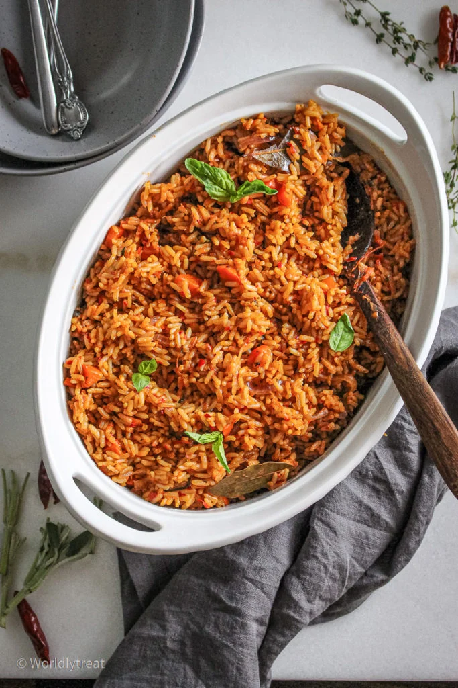

Nigerian Jollof Rice
Nigerian Jollof is a stewed base rice dish made with three main ingredients
: rice, tomato/pepper- stew base, and African-style seasonings like curry
powder, dried thyme, and meat stock.

Ingredients
- peppers
- tomatoes
- onions
- rice
- vegetable oil
- bay leaves
- tomato paste
- meat stock
- some seasonings like, curry powder, dried thyme, seasoning cubes and
salt
Instructions
- Parboil your protein choice (meat or chicken) with the spices
listed above. Remove from the water and set aside for later use
- Blend your red bell pepper, scotch bonnet, tomatoes, onions
(three-quarter of your big onions), garlic and ginger and put to a
boil till a thick paste is formed where there’s little or no water
left.
- Fry your protein of choice in oil (I’m using olive oil) till
it’s tender and golden brown then set aside. Meanwhile, wash and
parboil your rice.
- In a stainless/aluminum pot or saucepan, heat a little of the
left-over oil from frying your protein, sauté the rest of your
ominous till it’s fragrant and translucent. Add a teaspoon of
thyme and curry, white pepper to taste and one finger or a teaspoon
of ground ginger alongside ground nutmeg.
- Add your canned tomato pastes and stir while frying. Fry till
it has lost its acidic/sour taste. Then add the blended tomato-pepper
mix and keep stirring while frying. At this point, get your
meat/chicken water (stock) and add to the mix. Taste for seasoning
and add your salt and/or seasoning cubes if needed.
- Add your parboiled rice to your stew base and stir till all the
grains are coated with the stew base. Leave to simmer till all the
water is absorbed.
- Check for doneness. Cover with a tight lid and leave to simmer
for about 5 minutes then serve.
Return to top
Return to main page